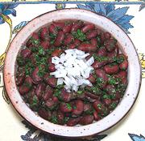

|
Red Beans with Herb DressingGeorgia - Lobio Mtsvanilit | ||||
| Makes: Effort: Sched: DoAhead: |
1-1/2 # ** 12 hrs Best |
Beans (Lobio) are very popular in Georgia. This easy appetizer / salad is made delightfully flavorful with the herbs and spices. Some finely chopped onions could be mixed in as well. | |||
|
1/2 1/2 ------ 1-1/2 1 ------ 1/4 1/4 2/3 1/3 ------ |
# T --- oz t --- c c t t --- |
Kidney Beans, dried (1) Salt for soaking -- Seasonings Herbs (2) Coriander seed -- Dressing Olive Oil Wine Vinegar, red Salt Pepper --------- |
Do Ahead - (8+ hrs, 5 min work)
|